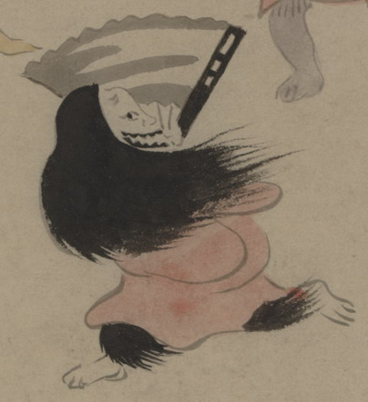

お歯黒をした女の化物。長い髪をなびかせて、大きな扇子を顔のあたりにかかげ、走っている。赤い衣を着ており、裾から覗く脚は黒い毛に覆われている。
出典：親書誌：U426_nichibunken_0150：付喪神絵詞；ツクモガミエコトバ／日付：2010／資源識別子：U426_nichibunken_0150_0080_0000
Copyright (c)2010- International Research Center for Japanese Studies, Kyoto, Japan. All rights reserved.